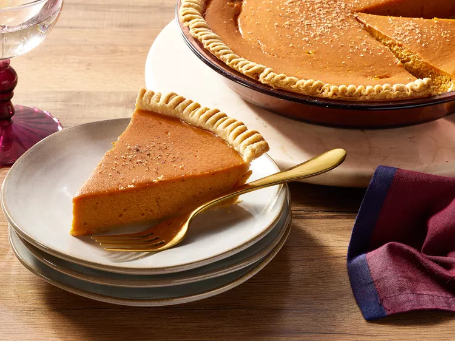

Simple Pumpkin Pie

Description
Learn how to make pumpkin pie with just four ingredients, an unbaked pie crust, and this easy pumpkin pie recipe. Show off your baking talent by serving this "easy as pie" classic for Thanksgiving or anytime you need a delicious dessert.
Ingredients
- ie Crust: Use a store-bought crust or make your own with our top-rated Butter Flaky Pie Crust recipe.
- Pumpkin Puree: This simple pumpkin pie recipe calls for a 16-ounce can of pumpkin puree. Of course, you can puree your own pumpkin if you want to go the homemade route.
- Sweetened Condensed Milk: A can of sweetened condensed milk adds irresistible flavor and creates a rich, smooth texture.
- Eggs: Two whole eggs lend richness and help bind the filling together.
- Pumpkin Pie Spice: A teaspoon of aromatic pumpkin pie spice gives this pumpkin pie all the aromatic, cozy flavor you need.
Steps
- Mix up the filling and pour it into the pie crust.
- Bake at 425 degrees F for about 15 minutes, then at 350 degrees F until the filling is set.